| 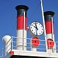 | 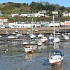 | 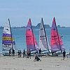 | 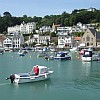 | 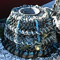 | 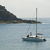 | 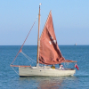 |
| à babord | aport |
| à bord | on board |
| à la cape | hove to |
| à la vaile | under sail |
| à tribord | to starboard |
| affliouer | launch |
| amather la vaile | lash the sail |
| amather | moor |
| am'ner la vaile, les vailes | strike sail |
| arrîsi | to reef, touch a sail |
| au vent | windward |
| aver l'cap sus | steer for |
| aver l'vent souos vèrgue | scud before the wind |
| bat'ler | to take boating |
| bord à bord | alongside |
| calfaîter | to caulk |
| canter par lé nez | to list by the bows |
| canter par lé tchu | to list by the stern |
| canter | to list |
| couôrre à tèrre | run aground |
| couôrre eune bordée | make a tack |
| couôrre | to tack |
| d'la batell'lie | collective of boats |
| d'la galette dé bord | ship's biscuit |
| dêbèrtchi | disembark |
| d'sembèrtchi | disembark |
| du bord dé baté | planking |
| êbieilli un paîsson | gut a fish |
| êchouer | run aground |
| en plieine mé | in open sea |
| en rade | in the roads |
| en r'lâche | storm-bound |
| env'yer tchiquechose hors bord | throw something overboard |
| èrlâchi | put back into port |
| eune bat'lée | a boatful |
| eune pêque | catch (of fish) |
| eune vaile | sail |
| faithe cap pouor | steer for |
| faithe un bord | make a tack, a run |
| faithe vaile | to sail |
| fliotter | float |
| haler en rade | bring into the roads |
| hors bord | overboard |
| l'amathe d'driéthe | sternfast |
| l'amathe dé d'vant | painter |
| l'amathe | mooring rope |
| l'ancre | anchor |
| la barre | helm |
| la bète | bait |
| la bôme | boom |
| la bordaille | planking |
| la bosse | painter, sternfast |
| la bouie | buoy |
| la bouie d'sauvetage | lifebelt |
| la brigue | brig |
| la cabanne | cabin |
| la caboûse | galley |
| la câle | hold |
| la câsse du gouvèrnas | rudder trunk, rudder case |
| la caûchie | breakwater |
| la caûchie | harbour |
| la caûchie | jetty |
| la côsse | hull |
| la course | course |
| la dgeule (d'un cliavé) | opening of lobster-pot |
| la d'mié-r'traite | half-ebb |
| la douanne | customs |
| la drague | dredge-net |
| la fausse tchelle | outer keel |
| la gaîffe-tâp-séle | gaff-topsail |
| la grand' vaile | main-sail |
| la grand' vèrgue | main-yard |
| la heune d'artimon | mizzen top |
| la heune | crow's-nest |
| la heune | top-sail |
| la heuniéthe du mât d'avant | foremast top |
| la heuniéthe | top |
| la heuniéthe | top-sail |
| la lache | bollard |
| la lanch'chie | launching |
| la lîngne dé pêque | fishing-line |
| la Marinne | Navy |
| la mé | sea |
| la mié-mathée | half-tide |
| la misaine | foresail, mizzen |
| la morte-ieau | neap-tide |
| la noe (d'un cliavé) | opening of lobster-pot |
| la nouôrriche | 'nourrice' |
| la pèrruque | mizzen topgallant-sail |
| la plieine mé | open sea |
| la pointe à risi | reefing point |
| la poupe | poop |
| la râlîngue | bolt-rope |
| la route (d'un navithe) | course (of ship) |
| la r'traite | ebb-tide |
| la seine | drag-net |
| la sonde | sounding-lead |
| la spèrre | spar |
| la sprède, sprède du grand mât | sprit |
| la tâp-sèle | top-sail |
| la tchelle | keel |
| la tchèrlîngue | keelson |
| la trâle | drag-net |
| la travèrsée | crossing |
| la vaile d'artimon | mizzen |
| la vaile d'avant | foresail |
| la vaile dé mîsaine | foresail |
| la vaile dé pèrrotchet | gallant-sail |
| la vaile dé sprède | spritsail |
| la vaile | sail |
| la vaûle | fishing-rod |
| la vèrgue dé cacatouais | royal-yard |
| la vèrgue d'heune | topsail yard |
| la vèrgue d'misaine | fore-yard |
| la vèrgue d'pèrrotchét | topgallant yard |
| la vèrgue | yard |
| la vèrgue, les vèrgues | yard(s) |
| la veue | lighthouse |
| l'ain | fishing-hook |
| lanchi | launch |
| l'ancre | anchor |
| large d'bord | broad in the beam |
| large d'run | broad in the beam |
| l'arriéthe | stern |
| l'aûmathe, l'aûmathe dé baté | locker, cuddy |
| l'aussiéthe | hawser |
| l'avant | bow |
| lé babord | port |
| lé barbet | barb (of hook) |
| lé bârrage | barrier |
| lé bârryi | helmsman |
| lé bas mât, les bas-mâts | lower mast(s) |
| lé baté à vailes | sailing boat |
| lé baté d'sauvetage | lifeboat |
| lé baté pêtcheux | fishing boat |
| lé bondé | buoy |
| lé bord à tèrre | in shore |
| lé bord au large | off shore |
| lé bord du vent | leeward |
| lé bord | board, side of ship |
| lé bordage | planking |
| lé bouête-hook | boat-hook |
| lé boulevard | bulwark |
| lé but d'driéthe | sternfast |
| lé but dé d'vant | painter |
| lé cacatouais | 1. royal or mast-top 2. royal-sail or sky-sail |
| lé cap' taine | captain |
| lé capeste | capstan |
| lé chantchi | shipyard |
| lé châté | forecastle |
| lé codîn | locker, cuddy |
| lé compangnon | companion-ladder or companion-way |
| lé cotteur | cutter |
| lé couothant | current (of tide) |
| lé cro | fishing-hook |
| lé dalot | scupper |
| lé dragon | flying-jib |
| lé drannet | draw-net, drag-net |
| lé d'vant | prow |
| lé d'vanté | apron |
| lé filet | fishing-net |
| lé fliot | flow of tide |
| lé gabé (du navithe) | dog-vane |
| lé gaillard d'arriéthe | quarter-deck |
| lé gaillard d'avant | forecastle |
| lé gîndas | capstan |
| lé gouvèrnas | rudder |
| lé grand mât | main-mast |
| lé grand pèrrotchet | main topgallant-sail |
| lé grand run | extreme beam |
| lé grappîn | grapnel |
| lé halant | current (of tide) |
| lé haut dg'ieau | high tide |
| lé hâvre | harbour |
| lé libet | hoop-net |
| lé liège, la fliotte | float |
| lé liet d'pathai | bunk |
| lé lis | lee |
| lé lof, lof d'eune vaile | luff of sail |
| lé mât d'artimon | mizzen mast |
| lé mât d'avant | foremast |
| lé mât d'heune | top-mast |
| lé mât d'misaine | foremast |
| lé mât d'pèrrotchet | topgallant mast |
| lé mousse | cabin-boy |
| lé navidgant | sailor |
| lé navithe à vailes | sailing-ship |
| lé paîsson | fish |
| lé pic d'eune vaile | peak, of sail |
| lé pid d'un mât | step or heel, of mast |
| lé pliat-bord | gunwale |
| lé port | harbour |
| lé p'tit pèrrotchet | fore topgallant-sail |
| lé quart | watch |
| lé r'mortcheux | tugboat |
| lé rouôlais (d'la mé) | rolling (of waves) |
| lé run | beam |
| lé saque-feu | storm-jib |
| lé stînmeux | steamer |
| lé tillac | poop |
| lé tribord | starboard |
| lé vârage | flotsam and jetsam |
| lé vitheveau | capstan |
| lé vrai | seaweed |
| l'êcoute, dé la vaile | sheet, of sail |
| l'êcoutil'ye | hatchway |
| l'èrsîn des louêmes | ebb (of waves) |
| l'èrtithant | ebb-tide |
| l'èrtithant | ebb |
| les bouoillons | ripples |
| les cargues | brails |
| les grand's louêmes | breakers |
| les haubans | shrouds or stays |
| les hissas, les hîssas du mât d'heune, l'hîssas d'la grand' vaile, et cétéra | halyards |
| les Mathionnettes | Northern Lights |
| les ouôlins | garboard |
| les papièrs dé bord | ship's papers |
| les râlîngues | bolt-ropes |
| les raquelinnes | ratlins, ratlines |
| les vâriabl'yes | doldrums |
| l'êtai, l'êtai du grand mât | stay |
| l'êtane | stem, stem-post |
| l'êtchipage | fishing tackle |
| l'êtouinne | scudding-sail, studding-sail |
| l'ieau d'câle | bilge-water |
| l'iérrîn | ladder-rope |
| livre d'bord | ship's log |
| lofer | to luff |
| l'ouaîrage | flotsam and jetsam |
| l'oursas | bilge-channel |
| lôvier | tack about |
| l'yi (d'un cliavé) | opening of lobster-pot |
| mettre à la cape | heave to |
| mettre à la vaile | to set sail |
| mettre en rade | lay up |
| mouoilli, ancrer | anchor |
| naûfragi | shipwrecked |
| pêtchi | fish |
| pînchi l'vent | hug the wind |
| pliat calme | dead-calm |
| prendre du paîsson | catch fish |
| prendre un ris | take in a reef |
| râlîndgi (et dêrâlîndgi) | 1. to rope a sail 2. to shiver |
| rîsi, rîsi eune vaile | to reef |
| r'lâchi | put back into port |
| r'vither | to tack |
| s'bat'ler | to go boating |
| s'n aller l'cap en mé | steer out to sea |
| sonder | to sound |
| sorti au baté | put out to sea |
| souos l'vent | leeward |
| souos l'vent | leeward |
| sus un bord | on one tack or run |
| tenvre d'bord | narrow beam |
| touônner | change course |
| tout à la vaile | full sail |
| toutes les vailes déhors | all sails set |
| un baté | boat |
| un batelyi | a boatsman |
| un but d'vérgue | yard-arm |
| un cap'taine à la course | privateer |
| un côffre d'bord | sea-chest |
| un ris, un ris d'vaile | reef |
| un vailyi | sailing ship |
| un vailyi | sailmaker |
| vither d'bord | change course |
| vither d'bord | tack about |
| vither la vaile | to stay, put over to opposite tack |
| 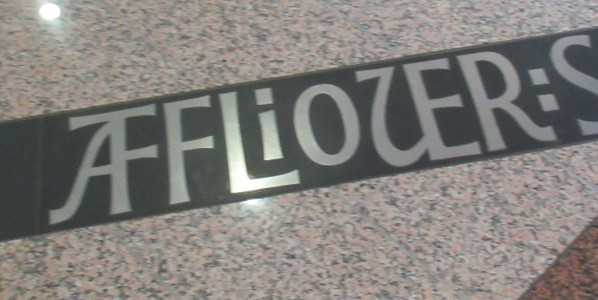 | 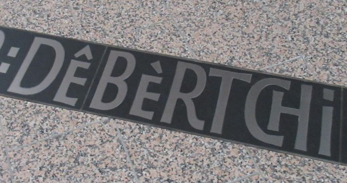 |
| 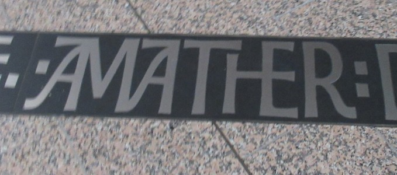 | 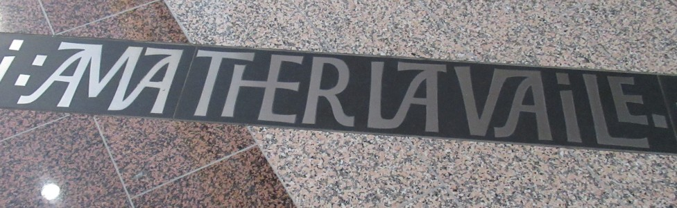 |
 |
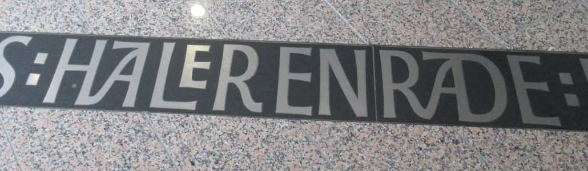 |
| 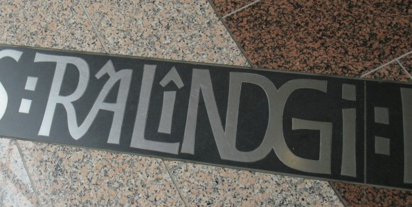 | 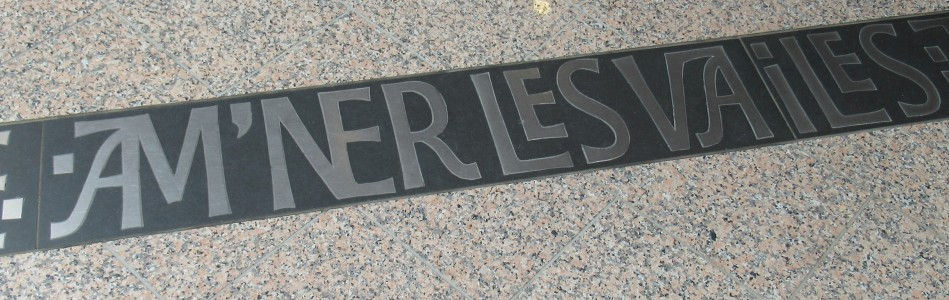 |
| 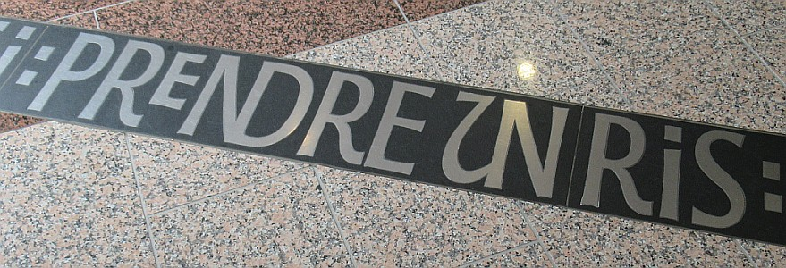 | 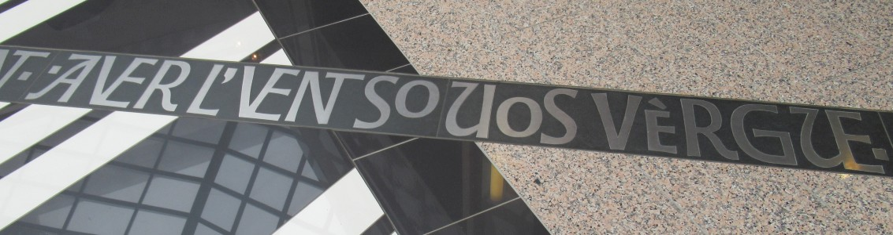 |
| 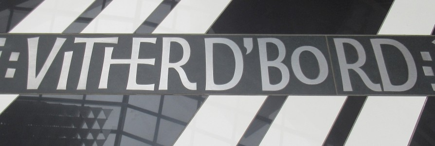 | |
| 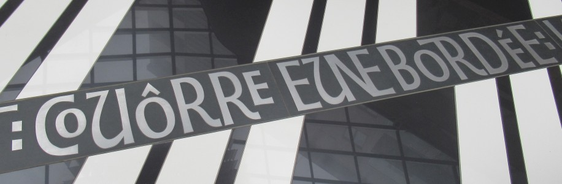 | 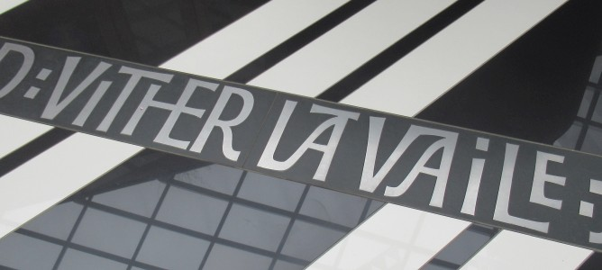 |
| 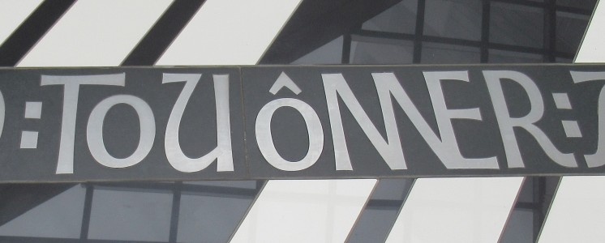 | |
| 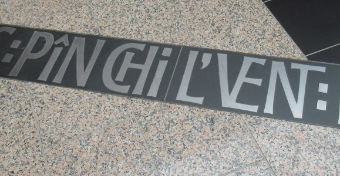 | 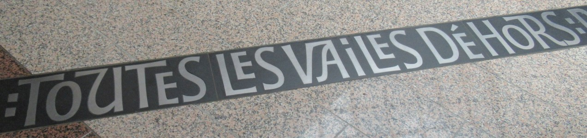 |
| 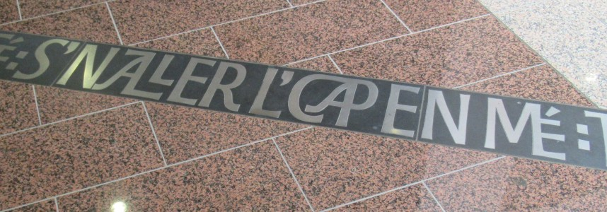 | 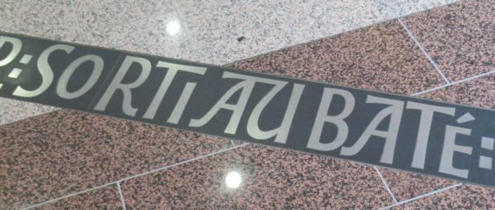 |
Viyiz étout:


{kind=link}
{kind=link}
{kind=link}
{kind=link}
{kind=link}
{kind=link}
{kind=link}
{kind=link}
{kind=link}
{kind=link}
{kind=link}
{kind=link}
{kind=link}
{kind=link}
{kind=link}
{kind=link}
{kind=link}
{kind=link}
{kind=link}
{kind=link}
{kind=link}
{kind=link}
{kind=link}
{kind=link}